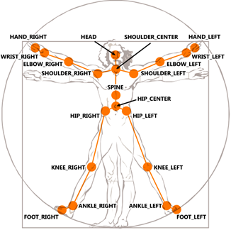

NID Skeleton
Kinectデバイスから取得した骨格トラッキングデータを返します。
Contents
入力信号
- SYNC (uint32): IMAQブロックから出力される同期用時間信号入力 [msec]。
出力信号
- Tracking (int32): 骨格トラッキング中の対象者数。
- Skeleton (double): 骨格のXYZ座標データ。座標は、Real world/Projectiveのいずれかに設定できます。
[OpenNI]
15箇所の骨格のXYZ座標データを取得できます。XYZ座標データが[0 0 0]の場合、その骨格は認識されていないことを意味します。 各部位の骨格データは、次の骨格データ要素に格納されています。 Head = 1, Neck = 2, Torso = 3, Left shoulder = 4, Left elbow = 5, Left hand = 6, Right shoulder = 7, Right elbow = 8, Right hand= 9, Left hip = 10, Left knee = 11, Left foot = 12, Right hip = 13, Right knee = 14, Right foot = 15.
※上記のLeft, Rightは鏡像化されています(トラッキングされている人間の視点から見た左右ではなく、NIDから見た左右になります)

[Kinect SDK for Windows]
20箇所の骨格のXYZ座標データを取得できます。XYZ座標データが[0 0 0]の場合、その骨格は認識されていないことを意味します。 各部位の骨格データは、次の骨格データ要素に格納されています。 Hip center = 1, Spine = 2, Shoulder center = 3, Head = 4, Shoulder left = 5, Elbow left = 6, Wrist left = 7, Hand left = 8, Shoulder right = 9, Elbow right = 10, Wrist right = 11, Hand right = 12, Hip left = 13, Knee left = 14, Ankle left = 15, Foot left = 16, Hip right = 17, Knee right = 18, Ankle right = 19, Foot right = 20.

- Image (uint8): 骨格データのRGB24イメージ。
ブロックパラメータ
- Max number of Skeleton Tracking: 骨格トラッキング対象者の最大数。2を選択した場合、Skeleton outputがもう一つ追加されます。
- Real world coordinates (Default: Projective): 15箇所の骨格データの出力に対して、Real world (X, Y, Z [m]) または、Projective (X,Y [pixel], Z [m]) XYZ座標を選択。
Projective XYZ座標:
Real world XYZ座標:

- Image output: 骨格データのRGB24イメージ出力を設定。
骨格トラッキング用キャリブレーション (OpenNIのみ有効)
※骨格トラッキング用キャリブレーションは、IMAQブロックのNeed PSI pose for calibration of Skeleton trackingをONにしているか、骨格トラッキングの自動認識機能をサポートしていないバージョンの OpenNIを使用している場合に必要になります。
- シミュレーションを開始します。
- 人がNIDの測定範囲内で動くと認識され、人の形が表示されます。
- 骨格トラッキングのキャリブレーションのため、PSIポーズと呼ばれる専用のポーズをNIDの前でとります。

- キャリブレーションが完了するまで、PSIポーズのまま動かないでください。キャリブレーション中は人の形は白色に変わり、完了すると元の色に戻ります。
- 骨格トラッキングをおこなっている最中は、人の形の上に＋マークが表示されます。＋が表示されている箇所がNIDによってトラッキングされている骨格部位になります。